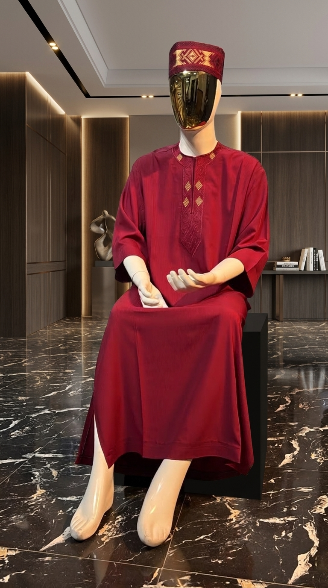

Reflecting tradition and innovation in modern Nigerian men's native wear.

BIODUN STYLE GRID (BSG) is a premier Nigerian menswear label built on the foundation of precision tailoring, uncompromised fabric quality, and timeless elegance.
We specialize in handcrafted Nigerian native wear—ranging from crisp Senator two-piece sets and geometric-embroidered Kaftans to regal Agbada ensembles. Each piece bridges rich West African cultural heritage with clean, contemporary silhouettes designed for everyday confidence and celebratory occasions.
High-grade cotton, linen, and cashmere blends tailored for comfort.
Clean silhouettes thoughtfully made for the modern gentleman.
Standard Nigerian men's native wear measurements in inches
| SIZE | CHEST (INCHES) | SHOULDER (INCHES) | WAIST (INCHES) | TOP LENGTH (INCHES) |
|---|---|---|---|---|
| Small (S) | 38 - 40" | 17.5" | 30 - 32" | 36" |
| Medium (M) | 41 - 43" | 18.5" | 33 - 35" | 38" |
| Large (L) | 44 - 46" | 19.5" | 36 - 38" | 40" |
| X-Large (XL) | 47 - 49" | 20.5" | 39 - 41" | 42" |
| 2X-Large (XXL) | 50 - 52" | 21.5" | 42 - 44" | 44" |
| 3X-Large (XXXL) | 53 - 55" | 22.5" | 45 - 47" | 45" |